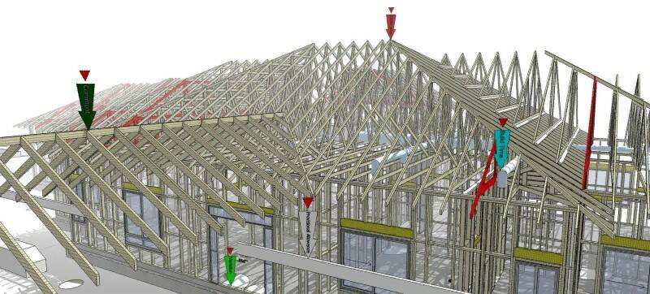

ПАРАМЕТРИЧЕСКАЯ АРХИТЕКТУРА
Лучшие программы для 3D-моделирования архитектуры
Ищете бесплатное программное обеспечение для 3D-моделирования архитектуры? Ознакомьтесь с лучшим программным обеспечением для 3D-архитектуры и BIM моделирования. Многие из них абсолютно бесплатны.
В середины девяностых годов архитекторы проектировали карандашом на ватмане. В современном мире все совсем по другому. Компьютер является неотъемлемым инструментом архитектура, благодаря программному обеспечению для 3D-моделирования проектирование стало проще и быстрее. Возможности программного обеспечения для архитектуры охватывает сферы от визуализации больших зданий до дизайна маленьких предметов интерьера.
BIM (Информационное моделирование здания) добавляет слой данных к чертежам. Когда вы рисуете прямоугольник в программном обеспечении 3D-архитектуры, программное обеспечение BIM автоматически назначит стандартные размеры и используемые материалы, поскольку оно содержит предполагаемое использование каждого объекта.
Подход программного обеспечения BIM позволяет очень легко создавать согласованные архитектурные проекты. Архитектурное программное обеспечение такого типа также позволяет мгновенно рассчитать массу здания, количество необходимых материалов и его общую стоимость.
Оно разработано не только для архитекторов, но и для инженерных и конструкторских команд. Совместно используемая программа облегчает взаимодействие внутри коллектива и гарантирует, что конфликты между различными аспектами проекта будут замечены задолго до реализации проекта.
SketchUp
| Краткая информация | |
|---|---|
| Стоимость | Бесплатно / Коммерческая лицензия $ 299 |
| ОС | Windows 7 и выше, macOS |
| Процессор | минимум 1 ГГц, рекомендуется 2 ГГц и более |
| ОЗУ | минимум 4 ГБ, рекомендуется 8 ГБ и более |
| Графическая карта: | поддерживает OpenGL и минимум 512 МБ памяти, рекомендуется 1 ГБ памяти |
| ОЗУ | минимум 4 ГБ, рекомендуется 8 ГБ и более |
| Разрешение экрана | N / A |
На сегодняшний день SketchUp является фаворитом для создания архитектурных концептуальных чертежей. Тем не менее, отличительной чертой, которая делает SketchUp потенциальным программным обеспечением для 3D-архитектуры, является его обширная библиотека расширений. Значительное количество этих плагинов добавляет функции из семейства программном обеспечении BIM, в SketchUp.
Говоря простым языком, SketchUp позволяет вам скомпилировать свое собственное программное обеспечение BIM, которое точно соответствует вашим потребностям. Вот список некоторых из этих плагинов:

PlusSpec — это коммерческий плагин для SketchUp, который обеспечивает всесторонние функции BIM в программном обеспечении 3D-архитектуры. Чтобы привести пример, этот плагин BIM позволяет легко создать полный перечень затрат. Плагин также может выводить 2D планы от строительства к оснастке.
Кроме того, этот плагин поставляется с инструментами, которые помогут вам создавать сложные конструкции, такие как крыши, поручни и многое другое. Весь дизайн, выполненный в этом программном обеспечении для 3D-архитектуры, полностью параметрический, что позволяет вам перемещать двери, окна и даже стены без необходимости перерисовывать все. Для некоммерческой работы (домовладельцы, желающие отремонтировать, любители и т. д.) доступна облегченная версия PlusSpec.
OpenStudio — бесплатный плагин, разработанный Министерством энергетики США для помощи в проектировании энергоэффективных зданий. Таким образом, он предлагает поддержку для очень конкретной задачи BIM. В SketchUp вы выбираете из большого числа типов зданий и климатических зон (они ориентированы на США). Кроме того, вы назначаете функции для каждой комнаты в программном обеспечении для 3D-архитектуры — программа охватывает различные функции.
Основываясь на информации, которую вы предоставляете в программном обеспечении 3D-архитектуры, основная программа затем рассчитает использование различных видов энергии в течение всего года с разбивкой по месяцам. Значения основаны на данных Министерства энергетики США. Если захотите, вы сможете уточнить результаты, предоставив дополнительную информацию для каждой комнаты — например, тип используемого освещения, количество телевизоров.
4D Virtual Builder привносит в SketchUp еще один аспект программного обеспечения BIM. Как следует из названия, это расширение позволяет вам планировать свой проект на протяжении всего жизненного цикла от различных этапов строительства до возможного сноса.
Кроме того, плагин BIM позволяет создавать анимации, диаграммы и рендеры для четкого информирования всех этапов о всех вовлеченных командах. У 4D Virtual Builder уже есть отличные отзывы. Например, эта программа помогла построить порт Роттердам.
Стоимость 3D архитектурного программного обеспечения SketchUp
Базовая версия SketchUp доступна бесплатно. SketchUp Pro стоит 299 $.
Студенты и преподаватели могут рассчитывать на скидки.
Другие возможности 3D архитектурного программного обеспечения SketchUp
SketchUp поставляется со своим облачным хранилищем, интегрированным в саму программу: 3D Warehouse — библиотека, в которую содержит около 2,2 миллиона моделей SketchUp.
Анимация и рендеринг SketchUp
Если этого недостаточно, вы можете выбрать из широкого спектра движков рендеринга, доступных как расширения. Обновите программное обеспечение 3D-архитектуры с помощью таких опций, как Thea Render, Lumion или V-Ray .